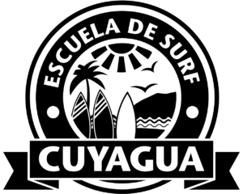
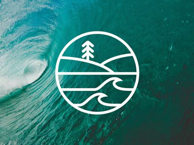

Algunas escuelas de surf recomendadas:
- Escuela de Surf Margarita: Ubicada en Playa El Agua, Isla de Margarita, esta escuela ofrece clases para todos los niveles, desde principiantes hasta avanzados.
- Escuela de Surf Playa Medina:Situada en Playa Medina, Sucre, esta escuela se especializa en la enseñanza de surf a principiantes y niños, con un enfoque en la seguridad y la diversión.
- Escuela de Surf Yo Surf:Localizada en Playa El Yaque, Isla Margarita, esta escuela ofrece clases grupales y privadas, así como alquiler de tablas y equipos.
- Surf Camp Venezuela:Ubicado en Playa El Agua, Isla de Margarita, este campamento ofrece alojamiento, clases de surf para todos los niveles, y actividades como yoga, SUP y kitesurf.
Aprende con los mejores:
Venezuela cuenta con una gran cantidad de escuelas de surf con instructores experimentados y certificados que te guiarán en tu proceso de aprendizaje, asegurándote una experiencia segura y divertida.
¿Por qué elegir Venezuela para aprender a surfear?
- Olas perfectas:Encontrarás olas para todos los niveles, desde suaves y largas para principiantes hasta desafiantes y tubulares para surfistas experimentados.
- Precios accesibles: En comparación con otros destinos de surf, Venezuela ofrece excelentes opciones de alojamiento, comida y clases a precios muy convenientes.
- Paisajes impresionantes:Surfea rodeado de playas paradisíacas, exuberantes paisajes y una rica biodiversidad.
- Paisajes impresionantes:Cultura vibrante: Conoce la cultura local, disfruta de su música, gastronomía y la calidez de su gente. 
Anímate a descubrir un mundo nuevo:
Surfea en Margarita, la isla del Caribe con más olas, desafía las olas de La Guaira, cuna del surf venezolano.
Explora las playas vírgenes de los Parques Nacionales Morrocoy y Chichiriviche, tambien puedes disfruta de la vida nocturna en Chichiriviche o Playa El Agua.
Saborea la deliciosa comida venezolana, llena de sabores y aromas únicos, Venezuela te espera con los brazos abiertos para que vivas una aventura inolvidable.